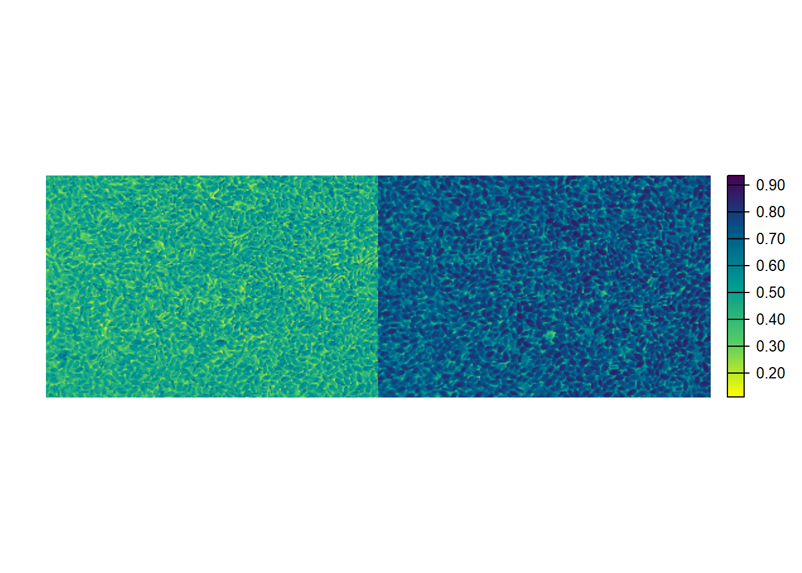

07: A paleta genética da linhaça: um mergulho na diversidade de cor auxiliado por métodos multivariados
1 Pacotes
2 Dados
dfbind <- import("data/df_cor_pca.xlsx")2.1 Exploração
dfplot <-
dfbind |>
group_by(GEN, tipo) |>
summarise(Rm = sum(R * prop),
Gm = sum(G * prop),
Bm = sum(B * prop),
Rv = sd(R) / mean(R),
Gv = sd(G) / mean(G),
Bv = sd(B) / mean(B))
dfhist_media <-
dfplot |>
rename(R = Rm, G = Gm, B = Bm) |>
select(tipo, R:B) |>
pivot_longer(cols = R:B,
names_to = "rgb",
values_to = "reflectancia") |>
mutate(rgb = fct_relevel(rgb, "R", "G", "B"))
# exploração
ggplot(dfhist_media, aes(x = reflectancia, fill = tipo)) +
geom_density(alpha = 0.7) +
facet_wrap(~rgb) +
theme_minimal() +
theme(panel.grid.minor = element_blank(),
legend.position = "bottom")
ggsave("figs/density.jpg",
height = 3,
width = 8)2.2 PCA
dfpca <-
dfplot |>
rename(R = Rm, G = Gm, B = Bm) |>
column_to_rownames("GEN") |>
mutate(BI = sqrt((R^2 + G^2 + B^2) / 3),
SCI = (R - G) / (R + G),
NGRDI = (G-R)/(G+R),
HUE = atan(2*(B-G-R)/30.5*(G-R)),
RI = (R^2 / (B * G^3)),
.after = tipo)
pcam <- PCA(dfpca, quali.sup = 1)
# Contribution
fviz_contrib(pcam, "var")ggsave("figs/biplot_cor_contrib.jpg",
height = 6,
width = 7)
fviz_pca_biplot(pcam,
labelsize = 3,
# repel = TRUE,
addEllipses = TRUE,
habillage = 1)ggsave("figs/biplot_cor.jpg",
height = 6,
width = 7)3 Distância
dist <- dist(dfpca[, -1])
distd <- clustering(dfpca |> filter(tipo == "Dourada") |> select(-tipo),
scale = TRUE)
c_dourada <-
fviz_dend(distd$hc, k = 6, cex = 0.6, main = "Dourada") +
geom_hline(yintercept = distd$cutpoint) +
ylim(c(-1, 8))
distm <- clustering(dfpca |> filter(tipo == "Marrom") |> select(-tipo),
scale = TRUE)
c_marrom <-
fviz_dend(distm$hc, k = 5, cex = 0.6, main = "Marrom") +
geom_hline(yintercept = distm$cutpoint) +
ylim(c(-1, 8))
sd(distm$distance) / mean(distm$distance)
## [1] 0.46428
arrange_ggplot(c_dourada, c_marrom, ncol = 2)ggsave("figs/dendograma_cor.jpg",
height = 3,
width = 8)4 Indice
marr <-
image_import("imgs/marrom.jpg") |>
image_resize(30)
dou <-
image_import("imgs/dourada.jpg") |>
image_resize(width = 1054, height = 704)
bind <- EBImage::abind(marr, dou, along = 1)
image_index(bind, index = "R")
image_index(bind, index = "G")image_index(bind, index = "B")5 Section info
sessionInfo()
## R version 4.3.3 (2024-02-29 ucrt)
## Platform: x86_64-w64-mingw32/x64 (64-bit)
## Running under: Windows 11 x64 (build 22631)
##
## Matrix products: default
##
##
## locale:
## [1] LC_COLLATE=Portuguese_Brazil.utf8 LC_CTYPE=Portuguese_Brazil.utf8
## [3] LC_MONETARY=Portuguese_Brazil.utf8 LC_NUMERIC=C
## [5] LC_TIME=Portuguese_Brazil.utf8
##
## time zone: America/Sao_Paulo
## tzcode source: internal
##
## attached base packages:
## [1] stats graphics grDevices utils datasets methods base
##
## other attached packages:
## [1] pliman_2.1.0.9000 FactoMineR_2.11 metan_1.18.0 factoextra_1.0.7
## [5] lubridate_1.9.3 forcats_1.0.0 stringr_1.5.1 dplyr_1.1.4
## [9] purrr_1.0.2 readr_2.1.5 tidyr_1.3.1 tibble_3.2.1
## [13] ggplot2_3.5.1 tidyverse_2.0.0 rio_1.1.0
##
## loaded via a namespace (and not attached):
## [1] mathjaxr_1.6-0 RColorBrewer_1.1-3 rstudioapi_0.16.0
## [4] jsonlite_1.8.8 magrittr_2.0.3 TH.data_1.1-2
## [7] estimability_1.5.1 farver_2.1.2 nloptr_2.0.3
## [10] rmarkdown_2.27 ragg_1.3.2 vctrs_0.6.5
## [13] minqa_1.2.7 RCurl_1.98-1.14 base64enc_0.1-3
## [16] terra_1.7-78 rstatix_0.7.2 htmltools_0.5.8
## [19] broom_1.0.6 cellranger_1.1.0 raster_3.6-26
## [22] KernSmooth_2.23-24 htmlwidgets_1.6.4 plyr_1.8.9
## [25] sandwich_3.1-0 emmeans_1.10.2 zoo_1.8-12
## [28] mime_0.12 lifecycle_1.0.4 pkgconfig_2.0.3
## [31] Matrix_1.6-5 R6_2.5.1 fastmap_1.1.1
## [34] shiny_1.8.1.1 digest_0.6.35 numDeriv_2016.8-1.1
## [37] colorspace_2.1-0 GGally_2.2.1 mapview_2.11.2
## [40] patchwork_1.2.0 leafem_0.2.3 textshaping_0.4.0
## [43] crosstalk_1.2.1 ggpubr_0.6.0 labeling_0.4.3
## [46] fansi_1.0.6 timechange_0.3.0 polyclip_1.10-6
## [49] abind_1.4-5 compiler_4.3.3 proxy_0.4-27
## [52] withr_3.0.0 backports_1.5.0 tiff_0.1-12
## [55] viridis_0.6.5 carData_3.0-5 DBI_1.2.2
## [58] ggstats_0.6.0 dendextend_1.17.1 ggforce_0.4.2
## [61] R.utils_2.12.3 ggsignif_0.6.4 MASS_7.3-60.0.1
## [64] leaflet_2.2.2 classInt_0.4-10 scatterplot3d_0.3-44
## [67] flashClust_1.01-2 tools_4.3.3 units_0.8-5
## [70] mapedit_0.6.0 httpuv_1.6.15 R.oo_1.26.0
## [73] glue_1.7.0 satellite_1.0.5 nlme_3.1-164
## [76] EBImage_4.42.0 promises_1.2.1 grid_4.3.3
## [79] sf_1.0-16 cluster_2.1.6 generics_0.1.3
## [82] gtable_0.3.5 tzdb_0.4.0 R.methodsS3_1.8.2
## [85] class_7.3-22 hms_1.1.3 car_3.1-2
## [88] sp_2.1-3 utf8_1.2.4 BiocGenerics_0.46.0
## [91] ggrepel_0.9.5 pillar_1.9.0 later_1.3.2
## [94] splines_4.3.3 tweenr_2.0.3 lattice_0.22-6
## [97] survival_3.6-4 tidyselect_1.2.1 locfit_1.5-9.9
## [100] knitr_1.46 gridExtra_2.3 stats4_4.3.3
## [103] xfun_0.44 DT_0.33 stringi_1.8.3
## [106] fftwtools_0.9-11 yaml_2.3.8 boot_1.3-30
## [109] evaluate_0.23 codetools_0.2-20 multcompView_0.1-10
## [112] cli_3.6.1 systemfonts_1.1.0 xtable_1.8-4
## [115] munsell_0.5.1 readxl_1.4.3 Rcpp_1.0.12
## [118] coda_0.19-4.1 png_0.1-8 leaps_3.1
## [121] exactextractr_0.10.0 jpeg_0.1-10 bitops_1.0-7
## [124] lme4_1.1-35.3 viridisLite_0.4.2 mvtnorm_1.2-5
## [127] lmerTest_3.1-3 scales_1.3.0 e1071_1.7-14
## [130] rlang_1.1.3 multcomp_1.4-25